How I re-architected Lucid's HMI for multi-vehicle scale.
My Role
Built for exactly one car.
But I could see room to push it further — a couple of pain points kept surfacing.
Air · Drawer browsing
Air · Drill-down close-up
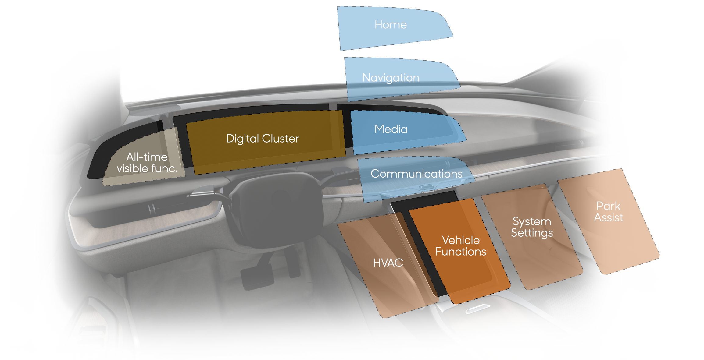
Lucid HMI System hierarchy across ICL, ICC, ICR, CID, RCCD, RSE — every node was a real surface Air had to ship and maintain.
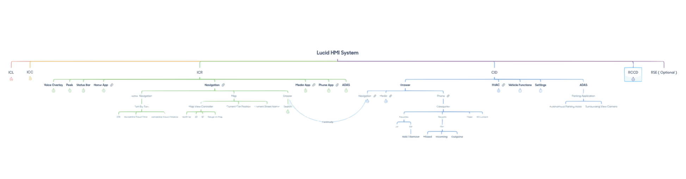
Air, Gravity, and Mid-Size — different display counts, different geometry, different driving postures. Air's IA was hard-wired to one of these.
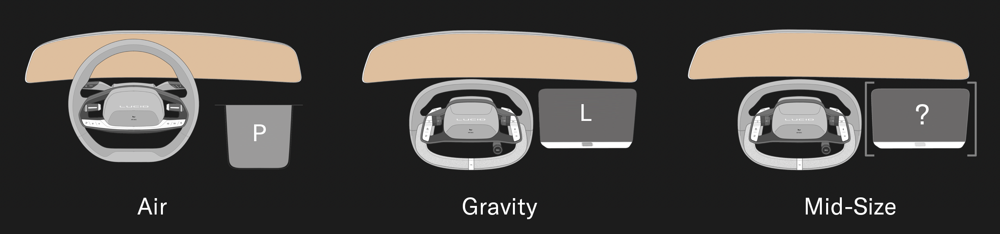
§1 · The Strategic Bet
A per-vehicle deliverable → one scalable platform.
Gravity Workshop — ~20 people, including the VP of Design, Director of Interior Design, and engineering managers — then two rounds of A/B testing on a driving simulator.
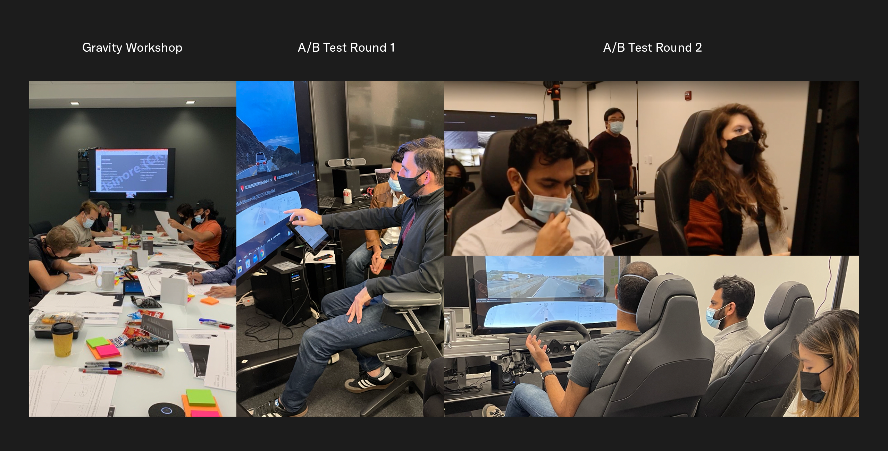
30-participant internal study · 6 dimensions: ease of use · task completion · intuitiveness · feature comparison · concept comparison · scenario frequency.
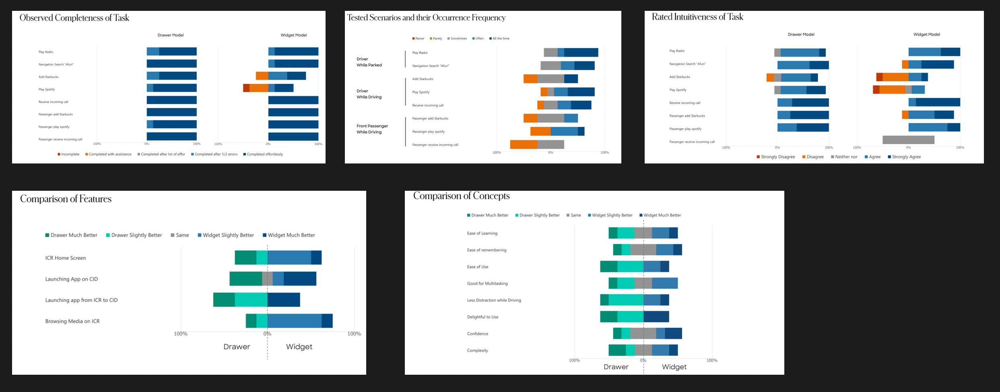
§2 · What the Data Decided
Widget won across the dimensions tested. Off the driving buck, participants consistently said it was easy to understand and the touch targets were driver-friendly.
Media playback: some users failed on first attempt — the app was over-structured. One driver: "I'm driving, I can't think that many steps ahead." That drove a focused round of micro-adjustments.
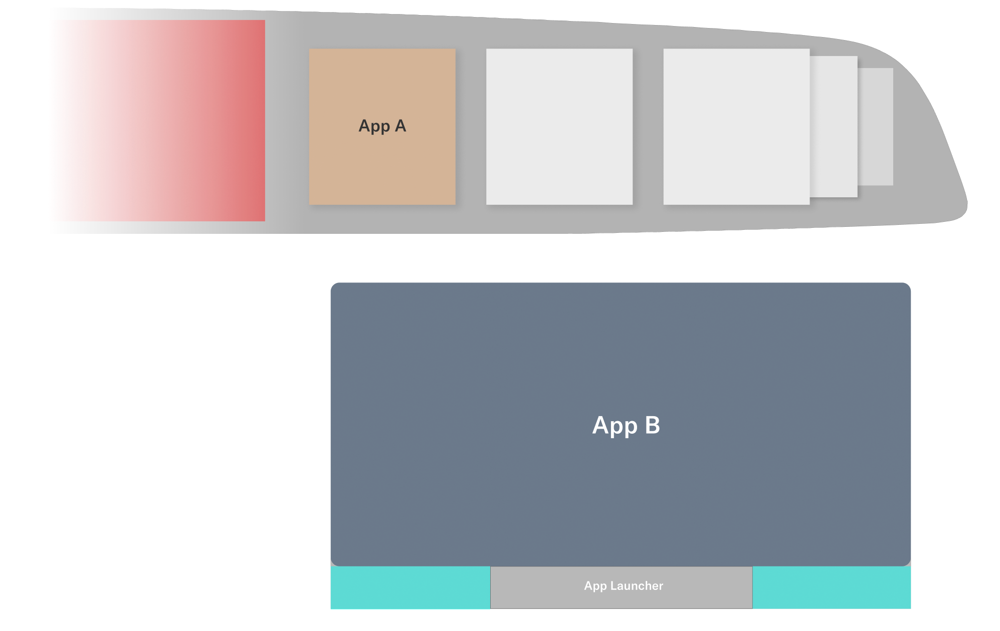
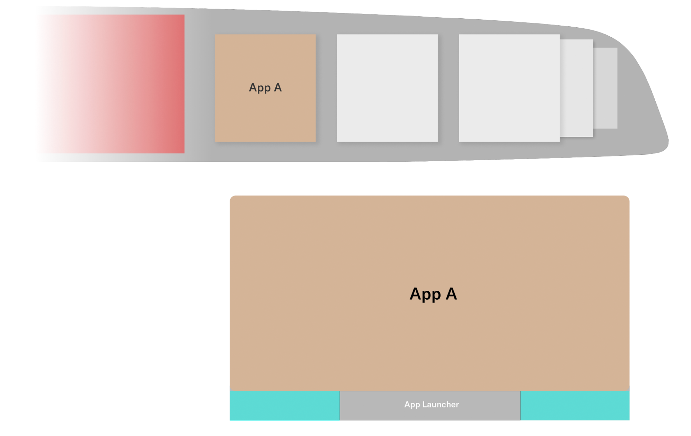
Research didn't just pick the architecture — it told us where to fix it.
Each principle a deliberate response to where Air's hierarchy broke.
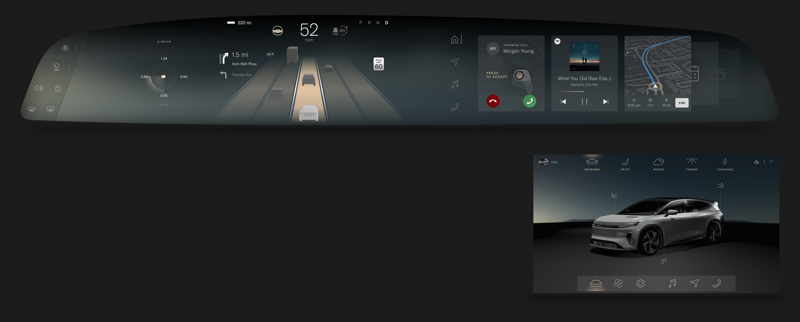
Principle · Scalable
Every application — navigation, media, phone, climate — built as a responsive widget that resizes, reflows, and recomposes for any display: portrait, landscape, ultra-wide, any future shape. Below: the same Media widget runs simultaneously on the ICR and CID — same app, two screens, two adaptive layouts.
Principle · Scalable
Those widgets standardized into one shared library — reused across functions and cockpits, never rebuilt for a new car.
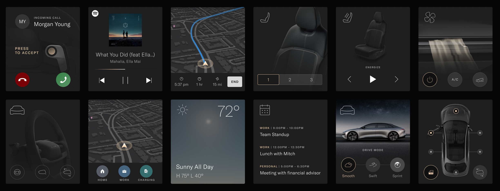
Principle · Multi-Tasking
Air's drawer drilled — one screen, one task at a time. Gravity's new IA lets ICR and CID run any app independently — Navigation on one, Media on the other, no blocking, no waiting.
Air · One Task At A Time
Gravity · ICR + CID Independent
Principle · Contextual
The system anticipates what the moment needs — surfacing the right thing without making the driver search.
Principle · Personalized
The same widget system made the cluster personalizable — drivers arrange their own glanceable information. Hold that thought; it returns in Impact.
Built on Lucid's brand identity and Air's existing visual style — refreshed into four design principles.
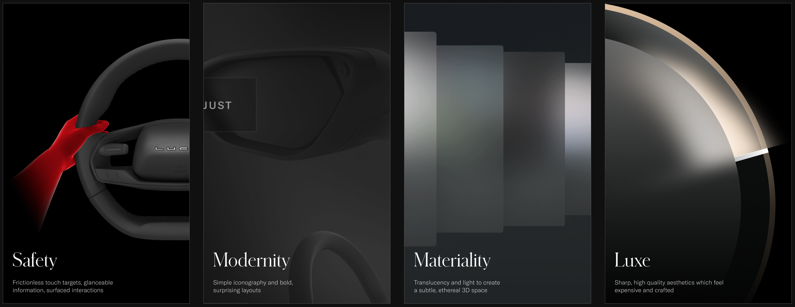
Lucid's brand positioning in auto — between futuristic and minimal, distinct from feature creep, old luxury, and emotionless function.
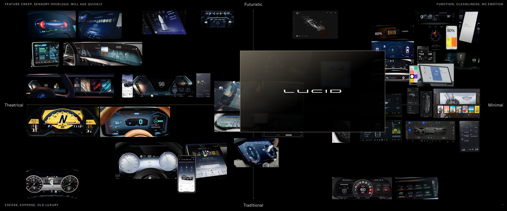
Five design decisions behind Gravity's new visual language.
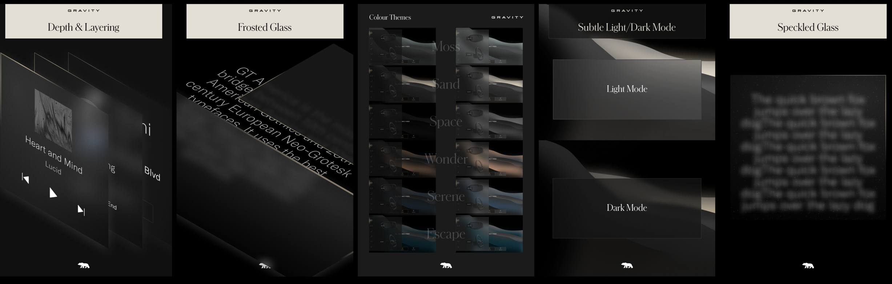
One more Air pain point — fixed at the system level.
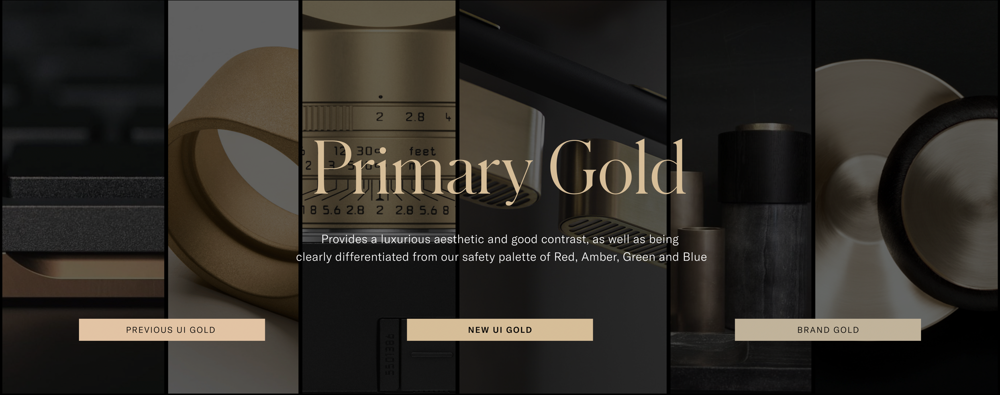
Render select HMI functions on a real-time 3D engine — a qualitative shift in both visual style and interaction.
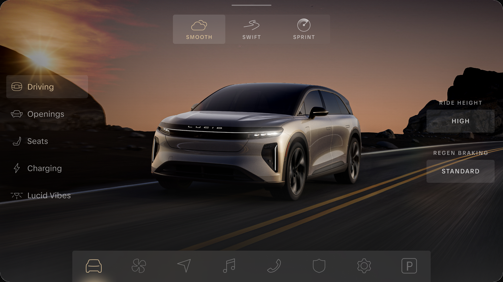
Driving · sunset, front-quarter
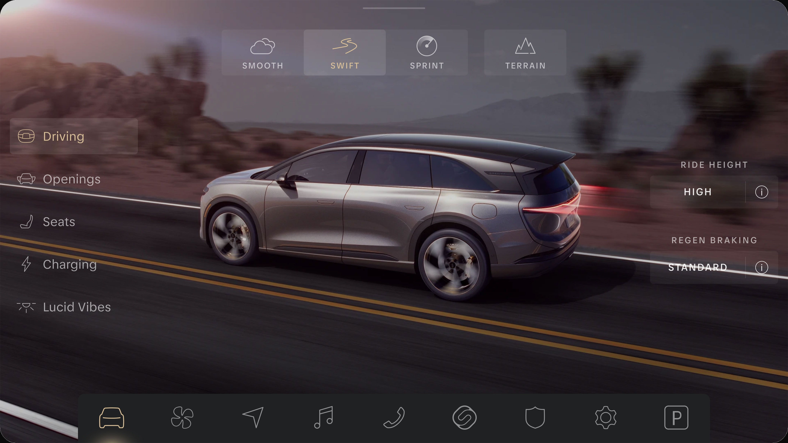
Driving · terrain, side view
Components, type, elevation, states, light & dark — extended from Air's toolkit, scaled across every Lucid program.
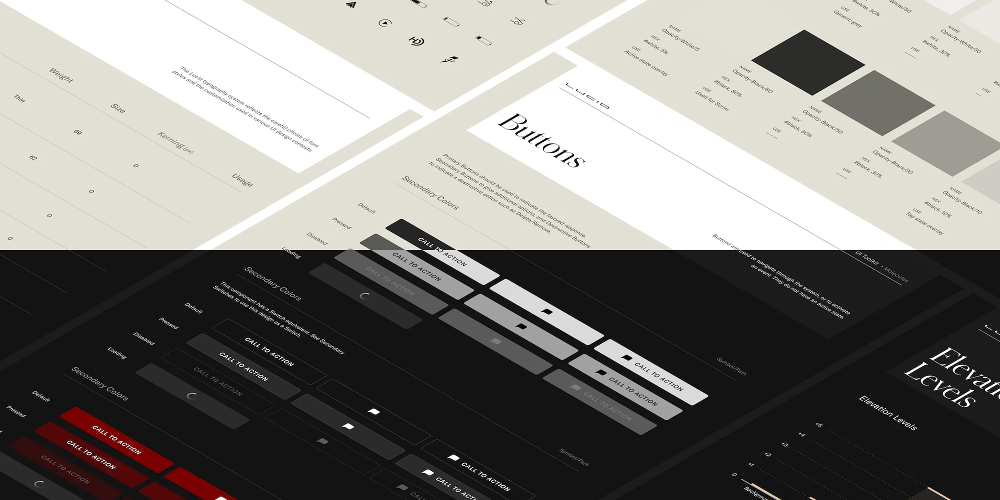
§5 · Collaboration & Leadership
§5 · Cross-Functional
Gravity shipped on it. Mid-size followed — Navigation, Phone, and Media modules reused, not rebuilt. And UX 3.0 brought the original Air onto it too — the car this case study opens with, now running on the architecture built to fix it.
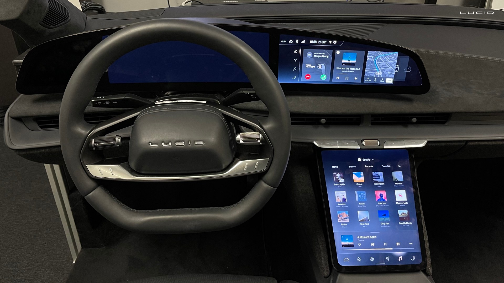
§6 · Impact
The test of a platform: does it outlive the team that built it.
§7 · Working with AI
For a design leader, AI collapses the distance from idea to tested prototype. That's how I'd accelerate a team.
§8 · Close
Samsara is a platform company. This is the work I want to keep doing.
Open to questions — happy to go deeper anywhere.